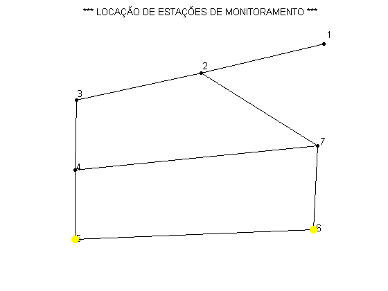

Contents
%%Rotina PRINCIPAL programa de localização de estações de monitoramento %================== PROCEDIMENTO DE CÁLCULO ========================== % Determinação da localização ótima de estações de monitoramento de % qualidade de água .................................................. % -------------- DISSERTAÇÂO DE MESTRADO ---------------------------- % Aluno: Roberto Suse % Orientador: Prof. Dr. Edevar Luvizotto Junior % Conclusão: Junho/2010 %===================================================================== clc; %Limpa tela clear all; %Limpa variáveis %========================= DADOS DE ENTRADA ==============================
Dados de entrada
Nome dos arquivos
Redefile = 'Exemplo1.inp'; %Nome do arquivo de dados .inp do Epanet Coordfile = 'Exemplo1.dat'; %Arquivo com coordenada dos nos extraido do inp % Critério de cobertura e estações a locar criterio = 0.5; %criterio de cobertura num_est = 2; %Numero de estações de montoramento (deve ser par) % Parametros do AG NGen = 30; %numero de gerações ind_pop = 6; %Numero de individuos na população prob_mut = 0.05; %Probabilidade de mutação %======================= FIM DA ENTRADA DE DADOS ========================= %%chamada ao EPANET Toolkit epanetloadfile(Redefile); %Abre arquivo do Epanet [Q] = getdata('EN_FLOW'); %Matriz da vazão Periodo Extensivo Per = 1; %Periodo Desejado %Obtem informações da rede analizada NoCont = getdata('EN_NODECOUNT'); %obtem numero de nós da rede LinkCont = getdata('EN_LINKCOUNT'); %Obtem numero mde elemnetos da rede ND = NoCont; %Indica a dimensao da matriz no. nos x no. de nos MQ = zeros(ND,ND); %Gera matriz de vazão nula DM=getdata('EN_BASEDEMAND'); %Obtem vetor de demandas e armazena em DM for i=1:ND Nix(i) = i; %Gera um vetor de indices dos nós [errorcode, N] = calllib('epanet2', 'ENgetnodeid',i,''); Nid(i) = str2num(N); %Gera um vetor de id dos nós end for i=1:LinkCont [errorcode, N1,N2] = calllib('epanet2', 'ENgetlinknodes', i,0,0); VN1i(i)= N1; VN2i(i) = N2; %Vetores com indice dos nós inicio e fim [errorcode, Nu] = calllib('epanet2', 'ENgetlinkid',i,''); VNu(i) = str2num(Nu); %Vetor com Numero do elemento [errorcode, Na] = calllib('epanet2','ENgetnodeid',N1, ''); VN1(i) = str2num(Na); %Vetor com numero do nó inicio [errorcode, Nb] = calllib('epanet2','ENgetnodeid',N2, ''); VN2(i) = str2num(Nb); %Vetor com numero do nó jusante [errorcode, N1i] = calllib('epanet2', 'ENgetnodeindex',num2str(VN1(i)),0); [errorcode, N2i] = calllib('epanet2', 'ENgetnodeindex',num2str(VN2(i)),0); N11(i) = str2num(N1i); N22(i) = str2num(N2i); end %Le arquivo de coordenada dos nós da rede %contem a parte referente as coordenadas do arquivo Inp do Epanet [labels,x,y] = readColData(Coordfile,3,1); %Obtem os valores extremos das coordenadas lidas [xmax,ind_xmax] = max(y(:,1)); [xmin,ind_xmin] = min(y(:,1)); [ymax,ind_ymax] = max(y(:,2)); [ymin,ind_ymin] = min(y(:,2)); %define a janela para o desenho da rede xmin = xmin-abs(xmax-xmin)*0.1; xmax = xmax+abs(xmax-xmin)*0.1; ymin = ymin-abs(ymax-ymin)*0.1; ymax = ymax+abs(ymax-ymin)*0.1; %Desenha os nós da rede plot(y(:,1),y(:,2),'o','LineWidth',1,... 'MarkerEdgeColor','k',... 'MarkerFaceColor','k',... 'MarkerSize',4) axis([xmin xmax ymin ymax]) axis off for i=1:LinkCont Naa = find(Nid==N11(i)); k = 1; while (N11(i) ~= x(k)) k = k+1; end x1p = y(k,1); y1p =y(k,2); Nbb = find(Nid==N22(i)); k = 1; while (N22(i) ~= x(k)) k = k+1; end x2p = y(k,1); y2p =y(k,2); %Desenha as tubulações line([x1p x2p], [y1p,y2p],'Color',[.0 .0 .0]); if Q(Per,i) > 0.0 MQ(Nbb,Naa)= abs(Q(Per,i)); else MQ(Naa,Nbb)= abs(Q(Per,i)); end end; epanetclose(); hold on plot(y(:,1),y(:,2),'o','LineWidth',1,... 'MarkerEdgeColor','k',... 'MarkerFaceColor','k',... 'MarkerSize',4) text(1.01*y(:,1),1.04*y(:,2),num2str(Nid(:)),... 'HorizontalAlignment','left') title('*** LOCAÇÃO DE ESTAÇÕES DE MONITORAMENTO ***') %Faz impressão na tela dos dados de entrada fprintf('\n================ Relatorío ============================\n'); fprintf('= Arquivo: %s \n', Redefile); fprintf('= Numero total de nós: %d \n',ND); fprintf('= Numero total de elementos: %d \n', LinkCont); fprintf('= Numero de estações a alocar: %d \n',num_est); fprintf('= Porcentagem de cobertura: %d \n',criterio*100); fprintf('======================================================= \n'); % ================ INICIO DO PROCEDIMENTO ============================ DEM = DM'; %vetor demandas em coluna; [f] = M_FRAC_AGUA (ND, MQ); %Gera matriz da fração de água [f] = MAT_COBERTURA (ND,f,criterio); %Gera matriz de cobertura global [POP] = POP_INICIAL(ind_pop, num_est,ND);%Gera população inicial aleatória [vajuste,POP] = F_OBJETIVO (ind_pop, f, POP, ND,num_est,DEM); %Calcula função objetivo da pop. %-------------- Chama a rotina de AG ------------------------------------ new_gera = 0; %zera contador de gerações disp('Geração Melhor Ajuste Media Geração Melhor Individuo') while new_gera < NGen new_gera = new_gera+1; gerac(new_gera) = new_gera; %Armazena vetor para plotagem [POP] = AG (num_est, ND, ind_pop, POP, prob_mut); %gera nova população [vajuste,POP] = F_OBJETIVO (ind_pop, f, POP, ND,num_est,DEM); %Avalia população % -------- Retem dados para impressão e graficos ------------------------ media(new_gera) = mean(vajuste); %Media do vetor auxiliar das funções objetivos [maxi,ind_max] = max(vajuste); %Localiza o maximo e o indice da melhor maximo(new_gera) = maxi; %Valor do melhor indivíduo Melhor_individuo = POP(ind_max).cromossomo; %Cromossomo da melhor solução fprintf(' %d %15.4f %14.4f ',new_gera, POP(ind_max).ajuste, media(new_gera)); for i=1:num_est-1 fprintf(' %d ',Nid(Melhor_individuo(i))); end fprintf(' %d \n',Nid(Melhor_individuo(num_est))); % ---------------------------------------------------------------------- end %Fim do processamento das gerações for i=1:num_est k = 1; while (Nid(Melhor_individuo(i)) ~= x(k)) k = k+1; end xpl(i) = y(k,1); ypl(i) = y(k,2); end hold on plot(xpl,ypl,'o','LineWidth',1,... 'MarkerEdgeColor','y',... 'MarkerFaceColor','y',... 'MarkerSize',8)
Warning: The data type 'FcnPtr' used by function ENepanet does not exist. File 'G:\TFC_HUGO\Progma_Matlab\Epanet_Matlab_Toolkit\exemplo1.inp' opened successfully. ================ Relatorío ============================ = Arquivo: Exemplo1.inp = Numero total de nós: 7 = Numero total de elementos: 8 = Numero de estações a alocar: 2 = Porcentagem de cobertura: 50 ======================================================= Geração Melhor Ajuste Media Geração Melhor Individuo 1 80.0000 65.0000 7 5 2 80.0000 66.6667 7 5 3 70.0000 50.8333 5 4 4 70.0000 62.5000 5 4 5 70.0000 70.0000 5 4 6 70.0000 70.0000 5 4 7 80.0000 67.5000 5 7 8 80.0000 75.0000 5 7 9 80.0000 78.3333 5 7 10 80.0000 78.3333 5 7 11 80.0000 80.0000 5 7 12 80.0000 80.0000 5 7 13 80.0000 78.3333 5 7 14 80.0000 80.0000 5 7 15 80.0000 78.3333 5 7 16 100.0000 83.3333 5 6 17 100.0000 90.0000 5 6 18 100.0000 91.6667 5 6 19 100.0000 100.0000 5 6 20 100.0000 95.0000 5 6 21 100.0000 96.6667 5 6 22 100.0000 96.6667 5 6 23 100.0000 100.0000 5 6 24 100.0000 100.0000 5 6 25 100.0000 100.0000 5 6 26 100.0000 95.0000 5 6 27 100.0000 83.3333 5 6 28 100.0000 88.3333 5 6 29 100.0000 83.3333 5 6 30 100.0000 100.0000 5 6